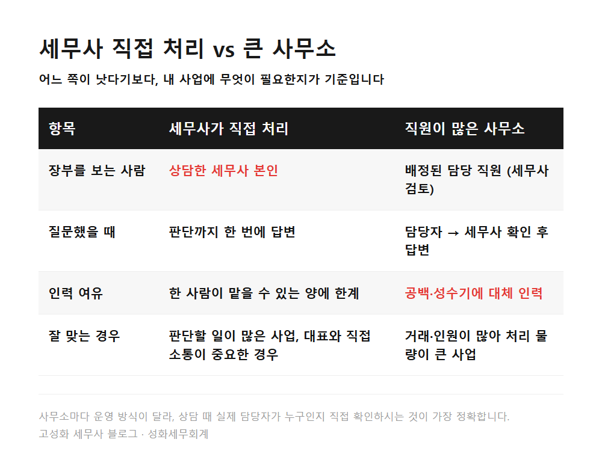
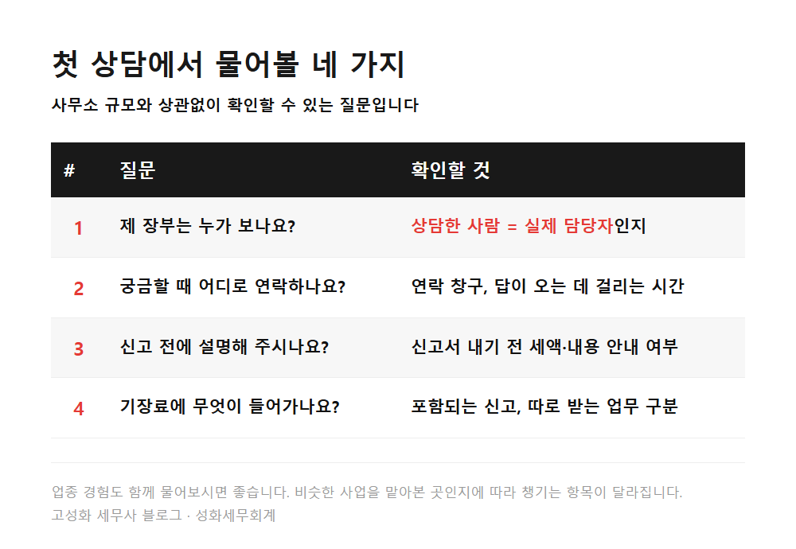

← 세무칼럼 목록
법인·기장

세무사 직접 처리 vs 큰 사무소, 첫 상담 질문 4가지
"세무사가 직접 해주는 곳이 나아요, 직원 많은 큰 사무소가 나아요?"
얼마 전 지인에게 이런 질문을 받았습니다. 세무사를 잘 고르는 기준이 뭐냐는 질문과 함께요.
저는 이렇게 답했습니다. 저는 지금 거래처 장부를 직접 보고 있어서, 직접 처리하는 쪽을 권하는 편이라고요.
다만 그게 모든 사업에 맞는 답은 아니라는 말도 같이 드렸습니다.
이 글에서 다루는 내용
- 그때 드린 답, 규모보다 먼저 볼 것
- 직접 처리하는 곳과 큰 사무소, 실제로 다른 점
- 왜 그렇게 답했는지
- 비슷한 고민을 하신다면
한눈에 보기


본문 전체와 근거 조문은 블로그에서 확인하실 수 있습니다.